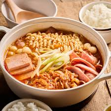
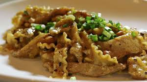

작가 메시지
추천 레시피 소개
김치 크로켓
바삭한 튀김 속 매콤한 김치와 부드러운 치즈의 조화! 한식과 양식의 이색적인 만남으로, 폭군의 입맛을 사로잡을 특별한 퓨전 요리입니다. 새로운 맛을 경험하고 싶은 분들께 강력 추천해요.
재료:
- 다진 김치 1컵, 다진 돼지고기 100g, 양파 1/4개(다진 것)
- 모차렐라 치즈 100g, 밥 1/2공기
- 튀김가루, 빵가루, 달걀 1개
- 간장 1큰술, 설탕 1작은술, 참기름 1작은술
조리과정:
- 팬에 식용유 두르고 돼지고기, 양파 볶다가 김치, 양념(간장, 설탕, 참기름) 넣어 볶는다.
- 볶은 재료에 밥, 모차렐라 치즈 섞어 크로켓 모양으로 빚는다.
- 튀김가루, 달걀물, 빵가루 순으로 옷 입히고, 170℃ 기름에 노릇하게 튀긴다.

부대찌개
얼큰하고 진한 국물에 햄, 소시지, 김치, 라면 등 푸짐한 재료가 가득! 미군 부대에서 유래된 K-푸드의 대표 주자, 부대찌개는 모두가 좋아하는 얼큰한 퓨전 요리입니다. 온몸이 따뜻해지는 감동적인 맛을 느껴보세요.
재료:
- 햄, 소시지, 베이컨 등 원하는 육류 가공품 200g
- 김치 1/2컵, 양파 1/4개, 대파 1/2대, 두부 1/4모
- 라면 사리 1개, 떡국 떡, 치즈 1장
- 양념장: 고추장 1큰술, 고춧가루 2큰술, 다진 마늘 1큰술, 간장 1큰술, 설탕 1작은술, 육수 2컵
조리과정:
- 모든 재료를 먹기 좋게 썰어 냄비에 보기 좋게 담는다.
- 중앙에 라면 사리를 올리고, 미리 섞어 둔 양념장을 뿌린 후 육수를 붓는다.
- 재료들이 모두 익을 때까지 끓이고, 마지막에 치즈 한 장을 올려 녹여 먹는다.

메주 파스타
이탈리아 파스타와 한국 전통 발효 식품 메주의 충격적인 만남! 깊은 풍미의 메주 된장 소스가 파스타 면에 완벽하게 어우러져, 잊을 수 없는 독특한 맛과 향을 선사하는 진정한 동서양 퓨전 요리입니다.
재료:
- 파스타 면 100g
- 메주 된장 2큰술, 올리브유 2큰술, 다진 마늘 1작은술
- 양파 1/4개(다진 것), 버섯 50g (슬라이스)
- 생크림 100ml 또는 우유 150ml, 파마산 치즈 가루
조리과정:
- 끓는 물에 소금 넣고 파스타 면 알덴테로 삶는다.
- 팬에 올리브유 두르고 마늘, 양파, 버섯 볶다가 메주 된장 넣어 향을 낸다.
- 생크림(또는 우유) 붓고 끓으면 삶은 파스타 면 넣어 잘 섞어준다.
- 그릇에 담고 파마산 치즈 가루 뿌려 마무리한다.